Estas son las nuevas armas de marvel de este nuevo capitulo.
Gwenpool, cuyo nombre real es Gwen Poole, es un personaje del universo Marvel que proviene de un mundo donde los cómics de Marvel son reales. Como fan de los cómics, se encuentra en el universo Marvel y decide convertirse en una heroína, utilizando su conocimiento de las tramas para su ventaja. Con habilidades que le permiten romper la cuarta pared, Gwenpool es conocida por su actitud desenfadada y su capacidad para manipular la realidad a su alrededor.
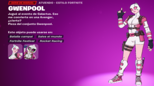
Máquina de Guerra, cuyo nombre real es James "Rhodey" Rhodes, es un personaje del universo Marvel y un cercano amigo de Tony Stark (Iron Man). Originalmente un piloto de la Fuerza Aérea, Rhodes se convierte en Máquina de Guerra cuando usa una armadura creada por Stark. Esta armadura está equipada con un poderoso arsenal, incluyendo armas de alta tecnología y misiles. A lo largo de los años, Rhodey ha luchado junto a los Vengadores y ha asumido el papel de Iron Man en varias ocasiones, demostrando ser un héroe leal y valiente.


Bananerine es una skin alterna de Bananín, la cual tiene una habilidad mutante de remaduración y un esqueleto imbuido de platanadamantium.
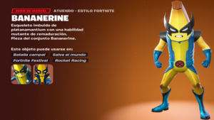 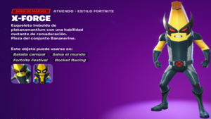 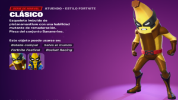
Emma Frost, también conocida como la Reina Blanca, es una mutante del universo Marvel con poderosas habilidades telepáticas y la capacidad de transformar su piel en un diamante indestructible. Originalmente una villana y miembro del Club Fuego Infernal, Emma eventualmente se une a los X-Men y se convierte en una líder y mentora para jóvenes mutantes. A lo largo de su historia, ha oscilado entre heroína y antiheroína, manteniendo su carácter complejo y multifacético.


Capitán Jones es una variante de la skin de Jones, la cual porta el Escudo de la Justicia.
 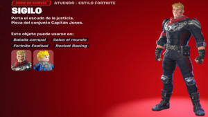
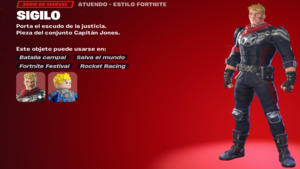
Mysterio, cuyo nombre real es Quentin Beck, es un villano del universo Marvel, conocido por ser uno de los enemigos más recurrentes de Spider-Man. Beck era un experto en efectos especiales y trucos de magia antes de convertirse en Mysterio, usando su conocimiento de ilusiones y tecnología avanzada para cometer crímenes y enfrentarse a los héroes. Aunque no posee superpoderes, su habilidad para manipular la realidad y crear complejas ilusiones lo convierte en un oponente formidable.
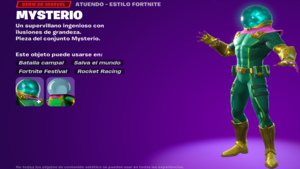 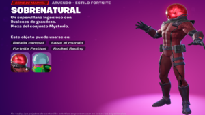 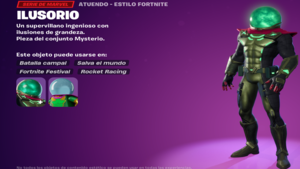
Shuri es la hermana menor de T'Challa (Black Panther) y la princesa de Wakanda en el universo Marvel. Extremadamente inteligente, Shuri es una genio de la tecnología y ha diseñado muchas de las innovaciones de Wakanda. En varias ocasiones, ha asumido el manto de Black Panther cuando su hermano ha estado incapacitado. Además de ser una guerrera hábil, Shuri ha desempeñado un papel crucial en la defensa de Wakanda y en la lucha contra amenazas globales.
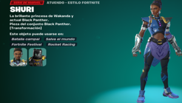


El Doctor Doom, cuyo nombre real es Victor von Doom, es uno de los villanos más icónicos del universo Marvel. Nació en Latveria, una nación europea ficticia, donde se convirtió en su gobernante absoluto. Es un científico brillante y un maestro de la magia, combinando ambos para crear tecnología avanzada y artefactos místicos. Doom es el principal enemigo de los Cuatro Fantásticos, pero ha enfrentado a muchos héroes del universo Marvel. Su motivación principal es dominar el mundo, creyendo que solo él puede gobernarlo correctamente.
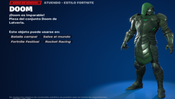
Aún faltan variantes de skins por anunciar, pero esto es todo lo que está disponible por el momento.
Regresar a la pagina de inicio.